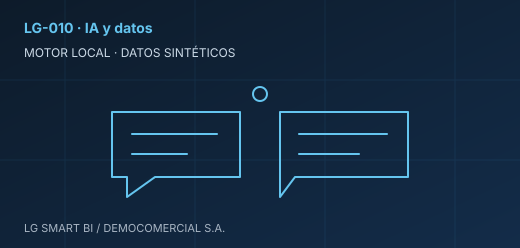

Inteligencia artificial aplicada a datos
Muestra cómo podría verse un asistente que responde preguntas sobre indicadores de una empresa ficticia.
Simulación basada en reglas, sin modelo de IA
Problema empresarial
Los usuarios de negocio desean formular preguntas sobre datos sin escribir consultas SQL.
Solución representativa
Interfaz de preguntas predeterminadas con respuestas calculadas por reglas. Documenta la arquitectura para una futura integración real.
Implementación independiente de demostración. La experiencia y el enfoque técnico se presentan sin reutilizar código o datos de clientes.
Arquitectura
Simulación interactiva — entorno ficticio
Empresa ficticia: Horizonte Demo S.A. · Moneda: guaraníes (PYG), sin decimales. Todos los nombres, referencias e importes son sintéticos. Las operaciones ocurren en el navegador y no acceden a infraestructura empresarial.
Cargando demostración local…
¿Necesitás una solución similar?
Podemos diseñar una implementación adaptada a las fuentes, procesos y controles de tu empresa.
Consultar por correo Otras formas de contacto